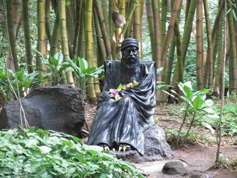

Shaniwar Wada, Pune Overview
.jpg)
Shaniwarwada, once the seat of the Peshwa governance in Pune is a 286-year-old mansion and is one of the
finest examples of architecture in the city. It is now one of the most popular tourist destinations in
Maharashtra. This grand mansion was built by the Peshwa Bajirao I himself as the residence of the Peshwas.
Although the Wada currently covers an area of 625 acres, in its heyday it covered almost the entire area of
the city itself. The place never fails to amaze the visitor with its various forts and fountain, and the
majestic statue of Baji Rao I that greets the visitor at the entrance of the palace. Although most of the
Wada was destroyed by an unexplained fire in 1828 .
Aga Khan Palace, Pune Overview

The mighty edifice of Aga Khan Palace is situated in Pune and was built by Sultan Muhammed Shah Aga Khan III
in the year 1892. It is one of the most important landmarks in Indian history and has been instrumental in
many defining moments of India's independence. It was once the site where Mahatma Gandhi, his wife Kasturba
Gandhi, as well as Sarojini Naidu and Mahadev Desai were held prisoners. Aga Khan Palace is well known both
for its architectural excellence as well as its historical significance. Spread over a vast land of 19
acres, the palace is now the headquarters of the Gandhi National Memorial society. Here, making khadi is
still one of the prime activities.The Sultan built the palace to support the poor in neighbouring support the place.
Osho Ashram Garden,Pune Overview

Osho Ashram, located at Koregaon Park in Pune, is a place known for its serenity and surreal practices of
meditation and love to achieve divinity. It is popularly known as Osho Meditation Resort and it is a unique
blend of meditation and the Greek concept of resort stay. The Ashram is a tranquil place which brings you to
your own centre of peace, meditation, and oneness. The ideologies of Osho also can be found here. Shrouded
in mystery, awe, and mysticism; The Osho Ashram is open only for its members. Non-members are required to
buy a one-day pass to visit the premises.
Started in 1974, Osho Ashram witnesses a huge number of visitors throughout the year, especially the foreigners This exciting and intense place has quite
Katraj Snake Park, Pune Overview
The Katraj Snake Park is the most visited and loved tourist attraction in the Rajiv Gandhi Zoo that is
located in Katraj, near the city of Pune in India. The Rajiv Gandhi is a famous and grand zoo that is spread
over an area of 130 acres and is managed by the Pune Municipal Corporation. It is divided into three parts:
the central zoo, an animal orphanage, and the most famous of all: the Katraj Snake Park. The snake park has
successfully managed to acquaint thousands of visitors with the unusual and fascinating wildlife through its
extensive collection of snakes, reptiles, birds and turtles.The Katraj Snake Park is a time-tested proof that fantastic and fun-filled places necessarily need not be expensive.the snake park is is home over 22 species of the park in the pune